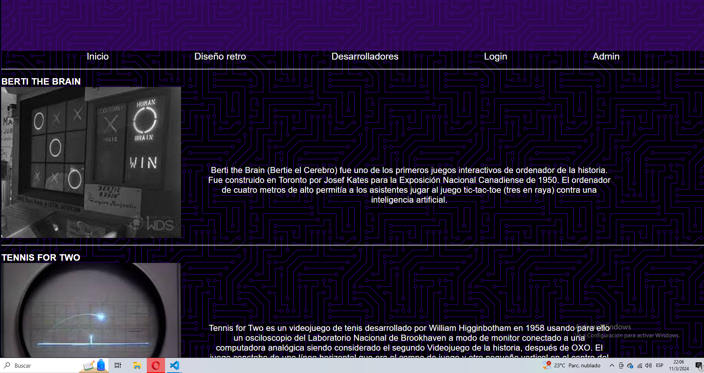
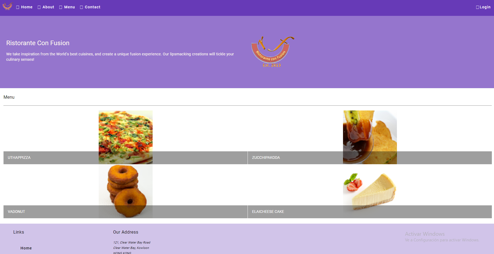

Desarrollador Junior de la universidad tecnológica de Pereira
Enfocado en el desarrollo full stack
Ingeniero de desarrollo
- Investigación teórica plasmada en html 
-
Mini mercado
Este fue un proyecto que hace uso de rutas, ciclos,uso de objetos y demás recursos básicos en angular, tiene un login funcional y se puede hacer click a las comidas para ver más acerca de dicha receta, fue un proyecto propio
- Links de los repositorios
- Investigación teórica
- Investigación teórica
- Proyectos hechos en react
- Proyectos hechos en django
Esta fue una investigación sobre la cronologái de los videojuegos plasmada en html junto con estilos en css, este cuenta con un login completamente funcional y una tabla de contenidos con todas la información textual del proyecto, este proyecto fue hecho como parcial final de la matería tecnicas de modelado de software, fue un trabajo en equipo aplicando los conocimietno de git